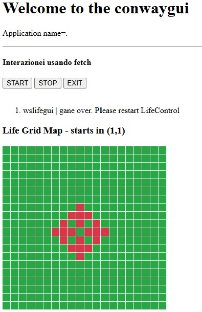

Conway's Game of Life è un automa cellulare in cui le celle di una griglia si evolvono in base a regole predeterminate.
HTML che funga da dispostivo di input-ouput
evoluto per l’applicazione <ConwayLife25 in Java.
|  | La pagina HTML svolge il ruolo di:
I files relativi alla sua realizazione sono:
|
L'utente deve poter modificare lo stato della griglia iniziale selezionando manualmente le celle che devono essere vive o morte prima dell'avvio del gioco.
Il sistema deve avviare la simulazione aggiornando la griglia a intervalli regolari, applicando le regole di evoluzione a ciascuna cella.
L'utente deve poter interrompere temporaneamente l'esecuzione della simulazione senza perdere lo stato corrente della griglia.
Deve essere possibile resettare la griglia riportandola allo stato iniziale definito dall'utente o svuotandola completamente.
L'utente deve poter modificare manualmente la griglia anche mentre la simulazione è in esecuzione, con aggiornamenti immediati dello stato delle celle.
La responsabilità di visualizzare lo stato di una cella dovrebbe essere assunta da un componente separato dalla logica del gioco, come il componente IOutDev (o ConwayOutput). In questo modo, il gioco (classe Life) è separato dalla visualizzazione, e il flusso del gioco è gestito dal LifeController. La separazione tra la logica e la visualizzazione consente una maggiore modularità e facilita eventuali cambiamenti nella rappresentazione visiva (come passare da una visualizzazione testuale a una grafica) senza influenzare la logica di gioco.
{kind=link}